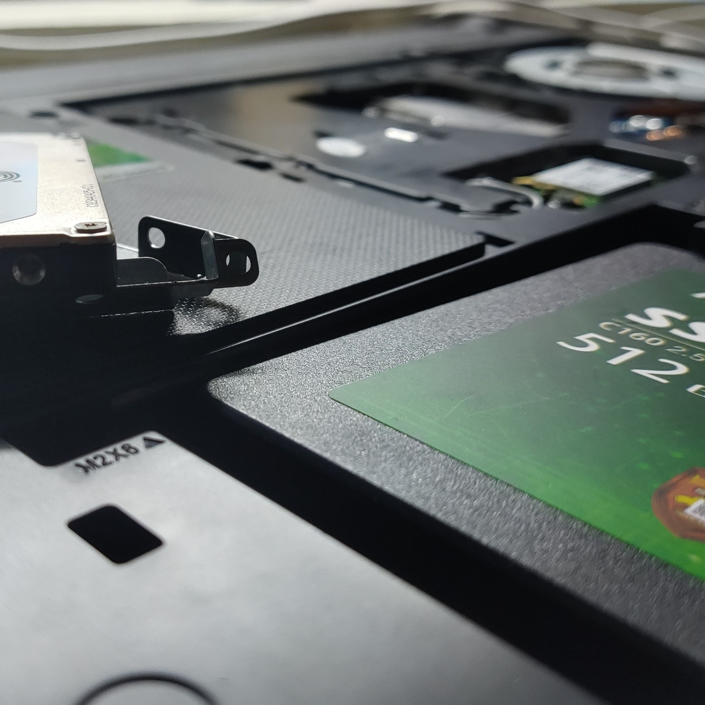
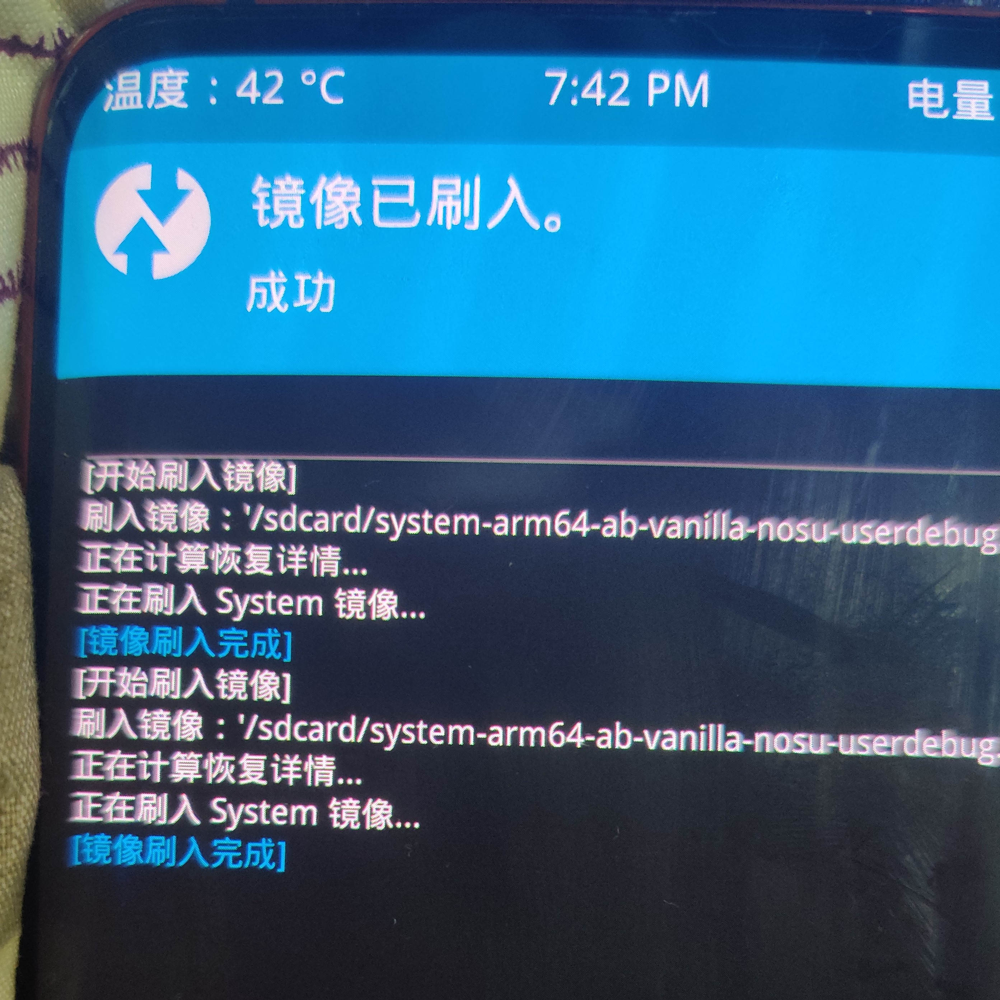

Camera EOS 700D 光圈 5 快门 1/640 ISO 640
2012年，使用Dev C++在计算机教室写出了自己的第一个程序
2014年，我使用Vegas完成了人生中的第一个视频
2015年，注册推特帐户，第一次接触Javascript等前端语言
2016年7月10日，在藤蔓未爬满的阳台上第一次按下了快门键
Nonebot2作为简单易用的多协议支持机器人框架，可以实现通过API实现各种有趣的功能
至今以来学习了Premiere,Photoshop,After Effects等多媒体编辑软件
Nonebot,Novelai,ChatGPT等有趣闲杂的项目
也有SpringBoot和数据库之类被迫学习搞得头疼的内容...
After Effects用于制作升格变速，运动追踪等效果作为简单易用的多协议支持机器人框架，可以实现通过API实现各种有趣的功能
技术启蒙
最早看到了林纳斯-托瓦兹的自传，并且平时也热衷于用技术解决问题。虽然有时会由于研究技术走弯路，做许多无用功。现在想来依然是不错的回忆
CodeMemory
#include "iostream" //C语言不要忘了头文件
Function Explode(x,y,z) {
// 最早的BlockLauncher插件使用Javascript编写
}
>Python --version //Python用的时候注意模块版本兼容问题,还有pip等包管理器对新手来讲史诗级大坑
一些照片



软件列表
| Name | Description | Requirement |
|---|---|---|
| After Effects | 做视频特效为主要功能，升格变速，运动追踪等 | 一般 |
| Audition | 音频处理，混响，电话效果 | 一般 |
| Lightroom | 快速图片磨皮，细节级修图软件 | 重要 |
| Media Coder/Encoder | 两个软件，负责视频转码，封装 | 很重要 |
| Photoshop | 只要关于图片的啥都能干 | 很重要 |
| Davinci Resolve,FlowFrames,JetBrains系列,qtorrent等也是重要实用的软件 | ||
My Boy
因为要做渲染任务和玩游戏，3500x有点不大够了，去鱼鱼淘的3700x，其实也是比较久的东西了，写此段之时，锐龙5k系列已经横空出世。
板子是b450m，中阶供电的板子，图个稳定了
内存四条英睿达，不过用的D.O.C.P，闲了再来超吧，有点舍不得
显卡1660s，本来的1066ti已经把金手指磨没了，辛苦它了
 有时候我会想，机器比人更好，你投入一分，它就回报一分。
有时候我会想，机器比人更好，你投入一分，它就回报一分。
谢谢你们一路的陪伴，在这冷暖变化的世界里。